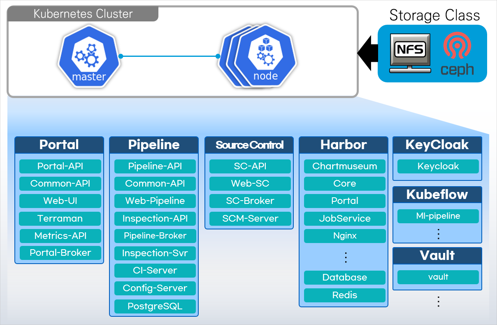
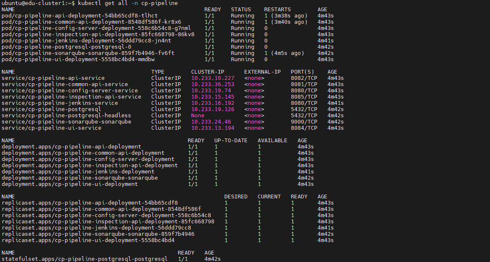
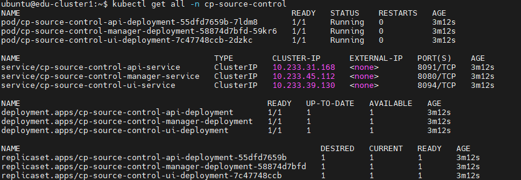

PaaS 설치
— 컨테이너 플랫폼(K-PaaS) 구축
이미 구축된 Kubernetes 클러스터 위에, 개발자가 실제로 쓰는 플랫폼(포털·파이프라인·소스컨트롤)을 직접 배포하며 PaaS가 무엇을 자동화해주는지 몸으로 확인합니다.
이 강의를 보는 순서
- 왜 지금 "PaaS 설치"인가 — 5강과 6강, 7강 사이에서 이 강의가 하는 역할과 전체 시스템 구성도 먼저 확인
- 포털(Portal) 구축 — 방화벽 준비 → 배포 실습 → 정상 배포 확인. 인증(Keycloak)·DB(MariaDB)·저장소(Harbor) 공용 인프라가 함께 뜨는 진입점
- 파이프라인(Pipeline) 구축 — 포털이 설치한 인프라 위에 CI/CD 실행 엔진(Jenkins·SonarQube·Config-Server)을 얹는 실습
- 소스컨트롤(Source Control) 구축 — 형상관리 서버를 얹어 3대 구성요소 배포를 완성
왜 지금 "PaaS 설치"인가
5강에서 만든 Kubernetes 클러스터는 아직 컨테이너를 올릴 수 있는 빈 그릇이다. 이번 강의는 그 위에 K-PaaS 포털·파이프라인·소스컨트롤을 순서대로 얹는 이유와, 전체가 어떻게 맞물리는지 지도부터 먼저 확인한다.
01 · 이 강의가 5강~7강 사이에서 하는 역할
5강까지 만든 것은 컨테이너를 올릴 수 있는 "그릇"인 Kubernetes 클러스터(IaaS~오케스트레이션 수준)이다. 하지만 클러스터만 있으면 개발자는 kubectl 명령어로만 배포 상태를 조회해야 하고, 로그인·권한 관리·이미지 저장소·CI/CD 서버 같은 것도 전혀 없다. 6강은 그 클러스터 위에, 1강에서 배운 PaaS(개발자가 인프라를 신경 쓰지 않고 코드/배포에 집중하도록 도와주는 플랫폼 계층)를 실제로 설치하는 강의다. 구체적으로는 K-PaaS라는 오픈소스 컨테이너 플랫폼의 3대 서비스 — 포털(대시보드), 파이프라인(CI/CD 실행기), 소스컨트롤(형상관리 서버) — 를 Helm 기반 배포 스크립트로 클러스터에 얹는다.
Kubernetes 클러스터를 직접 운영해본 사람은 알겠지만, kubectl만으로 여러 팀이 애플리케이션을 배포·모니터링·인증 관리까지 하기는 매우 번거롭다. 이 강의는 "인프라(IaaS) 위에 플랫폼(PaaS)을 얹으면 무엇이 자동화되는가"를 코드 한 줄 한 줄이 아니라 배포 스크립트 · Helm 차트 · 변수 파일이라는 실제 도구로 체감하게 한다. 즉 1강에서 배운 IaaS→PaaS 계층 구분이 "실제로 무엇을 설치하는 행위인지"를 보여주는 강의다.
사내에 이미 Kubernetes 클러스터가 있고, 그 위에 개발팀 전체가 함께 쓸 대시보드·CI/CD·형상관리 플랫폼을 셀프호스팅(self-hosting)해야 하는 상황 — 즉 AWS/GCP 같은 퍼블릭 클라우드의 관리형 PaaS를 쓰지 않고, 온프레미스/프라이빗 클러스터 위에 오픈소스 PaaS를 직접 구축해야 하는 조직(공공기관, 금융, 사내 인프라팀)에서 실제로 수행하는 작업 절차다.
1강에서 본 비유를 다시 가져오면: 온프레미스는 자가용, IaaS는 렌트카, PaaS는 택시였다. 5강까지 만든 Kubernetes 클러스터는 "렌트카(인프라)만 빌린" 상태이고, 이번 강의는 그 위에 "기사 역할을 해줄 서비스"(포털·파이프라인·소스컨트롤)를 설치해서 렌트카를 택시로 바꾸는 작업이라고 보면 된다. 즉, 개발자가 직접 운전(인프라 조작)하지 않아도 목적지(코드 배포)만 말하면 되게 만드는 것이다.
02 · 전체 아키텍처 한눈에 보기

이 다이어그램은 이번 강의 전체의 지도 역할을 한다. 7개 컴포넌트 그룹 중:
- Portal (Portal-API, Common-API, Web-UI, Terraman, Metrics-API, Portal-Broker) — 1부에서 설치
- Pipeline (Pipeline-API, Common-API, Web-Pipeline, Inspection-API, Pipeline-Broker, Inspection-Svr, CI-Server, Config-Server, PostgreSQL) — 2부에서 설치
- Source Control (SC-API, Web-SC, SC-Broker, SCM-Server) — 3부에서 설치
- Harbor(Chartmuseum, Core, Portal, JobService, Nginx, Database, Redis)와 KeyCloak / Kubeflow / Vault — 포털을 설치할 때 함께 뜨는 공용 인프라이며, 파이프라인·소스컨트롤은 이 인프라를 그대로 재사용한다(그래서 "포털을 먼저 설치해야 한다"는 선행 조건이 반복해서 등장한다)
파이프라인과 소스컨트롤의 "설치 조건(Prerequisite)" 슬라이드에는 공통적으로 "인증서버 KeyCloak, 데이터베이스 MariaDB, 레포지토리서버 Harbor 설치가 사전에 진행되어야 하며, 포털 배포 시 해당 인프라가 모두 설치된다"고 명시되어 있다. 즉 포털 배포 스크립트가 이 3개 그룹을 처음 설치하는 진입점이고, 나머지 두 모듈은 그 위에 자기 서비스만 추가로 얹는 구조다 — 이것이 이번 강의가 포털을 1부로 두는 이유다.
포털(Portal) 구축
포털은 클러스터를 웹 UI로 다루게 해주는 대시보드이자, 파이프라인·소스컨트롤이 공유해서 쓸 인증·DB·저장소 인프라를 함께 설치하는 진입점이다.
01 · 포털이 왜 필요한가
Kubernetes API를 직접 다루려면 kubectl과 YAML 문법을 알아야 한다. 컨테이너 플랫폼 포털은 이 복잡성을 감추고, 로그인(Keycloak 인증) 한 번으로 배포 현황 조회, 리소스 관리, 장애 시뮬레이션까지 웹 화면에서 할 수 있게 해준다. 이는 1강에서 배운 "PaaS는 인프라보다 코드/운영에 집중하고 싶은 개발팀에 적합하다"는 내용을 그대로 구현한 것이다.
여러 팀이 하나의 Kubernetes 클러스터를 나눠 쓰는 사내 플랫폼 환경 — 각 팀이 kubectl 권한을 직접 갖지 않고도 자기 네임스페이스의 배포 상태를 웹에서 확인해야 하는 상황에 적용된다.
즉, 포털이 없다면 개발자는 은행 창구 없이 직접 전산실 서버를 만져야 하는 것과 같다. 포털은 그 사이에 "로그인만 하면 클릭 몇 번으로 처리해주는 창구 직원"을 세워주는 것이다 — 명령어(kubectl)와 설정 문법(YAML)을 몰라도, 웹 화면에서 버튼만 눌러 배포 상태를 확인하고 조작할 수 있게 해준다.
02 · 설치 준비 — 방화벽 정보 설정
포털을 배포하기 전에, IaaS 보안그룹(Security Group)에서 Master Node와 Worker Node가 서로 통신할 포트를 미리 열어둬야 한다. (원본 p.4)
Master Node
| 프로토콜 | 포트 | 비고 |
|---|---|---|
| TCP | 111 | NFS PortMapper |
| TCP | 2049 | NFS |
| TCP | 2379-2380 | etcd server client API |
| TCP | 6443 | Kubernetes API Server |
| TCP | 10250 | Kubelet API |
| TCP | 10251 | kube-scheduler |
| TCP | 10252 | kube-controller-manager |
| TCP | 10255 | Read-Only Kubelet API |
| UDP | 4789 | Calico networking VXLAN |
Worker Node
| 프로토콜 | 포트 | 비고 |
|---|---|---|
| TCP | 111 | NFS PortMapper |
| TCP | 2049 | NFS |
| TCP | 10250 | Kubelet API |
| TCP | 10255 | Read-Only Kubelet API |
| TCP | 30000-32767 | NodePort Services |
| UDP | 4789 | Calico networking VXLAN |
6443(API Server), 10250(Kubelet API) 같은 포트가 막혀 있으면 배포 스크립트가 클러스터에 명령을 전달하지 못하고, 111/2049(NFS)가 막히면 스토리지 마운트가 실패하며, 4789(VXLAN)가 막히면 파드 간 네트워킹(Calico)이 끊긴다. 즉 이 표는 "포털을 포함한 모든 K-PaaS 컴포넌트가 정상 동작하기 위한 최소 네트워크 전제조건"이다.
즉, 위 표의 포트 번호들은 아파트 경비실이 어떤 방문객(트래픽)을 통과시킬지 미리 정해두는 목록과 같다. 필요한 문(포트)을 미리 열어두지 않으면, 설치 스크립트가 아무리 잘 짜여 있어도 서버들끼리 서로 연락할 방법이 없어 설치 자체가 막힌다.
03 · 포털 배포 실습
-
배포 파일 다운로드
(원본 p.5) — 반드시 Kubernetes Control Plane(Master Node)에서 진행
이 코드가 하는 일을 한 줄로 요약하면: 인터넷에서 포털 설치용 압축 파일을 내려받고, 그 압축을 푸는 것이다.
# Deployment 파일 다운로드 경로 생성 $ mkdir -p ~/workspace/container-platform $ cd ~/workspace/container-platform # Deployment 파일 다운로드 및 파일 경로 확인 $ wget --content-disposition https://nextcloud.k-paas.org/index.php/s/qrApL4sP5eC2WMX/download # cp-portal-deployment-v1.7.0.tar.gz 파일이 나오는지 확인 $ ls ~/workspace/container-platform # Deployment 파일 압축 해제 $ tar -xvf cp-portal-deployment-v1.7.0.tar.gz$ wget --content-disposition https://nextcloud.k-paas.org/index.php/s/qrApL4sP5eC2WMX/download Resolving nextcloud.k-paas.org (nextcloud.k-paas.org)... xx.xx.xx.xx Connecting to nextcloud.k-paas.org (nextcloud.k-paas.org)|xx.xx.xx.xx|:443... connected. HTTP request sent, awaiting response... 200 OK Saving to: 'cp-portal-deployment-v1.7.0.tar.gz' cp-portal-deployment-v1.7.0.tar.gz 100%[===================>] 'cp-portal-deployment-v1.7.0.tar.gz' saved예시 화면 · 참고용 실제 IP·전송 속도·시간 값은 실행 환경마다 다르며, 이 화면은 wget 다운로드 명령의 일반적인 출력 형태를 보여주기 위한 예시다.
$ tar -xvf cp-portal-deployment-v1.7.0.tar.gz cp-portal-deployment/ cp-portal-deployment/script/ cp-portal-deployment/script_mc/ cp-portal-deployment/script_fed/ cp-portal-deployment/values_orig/ cp-portal-deployment/secmg_orig/ cp-portal-deployment/istio_mc/ ...예시 화면 · 참고용 압축 해제 시 나열되는 개별 파일 목록은 실행 환경마다 다르며, 이 화면은 위 "배포 파일 디렉토리 구성"에 나온 최상위 폴더명만 참고로 보여준다.
-
배포 파일 디렉토리 구성 확인
(원본 p.6)
이 코드가 보여주는 것을 한 줄로 요약하면: 압축을 푼 폴더 안에 어떤 하위 폴더들이 들어있는지 구조를 보여주는 것이다.
cp-portal-deployment ├── script # (싱글) 포털 배포를 위한 변수 및 스크립트 파일 위치 ├── script_mc # (멀티) 포털 배포를 위한 변수 및 스크립트 파일 위치 ├── script_fed # (페더레이션) 포털 배포를 위한 변수 및 스크립트 파일 위치 ├── values_orig # Helm 차트 values 파일 위치 ├── secmg_orig # 시크릿관리시스템 배포 파일 위치 └── istio_mc # Istio 서비스메시 관련 파일 위치 -
변수 파일 수정
(원본 p.7~9)
이 코드가 하는 일을 한 줄로 요약하면: 변수 파일이 있는 폴더로 이동해서, 그 변수 파일을 편집기(vi)로 여는 것이다.
$ cd ~/workspace/container-platform/cp-portal-deployment/script $ vi cp-portal-vars.sh변수 설명 상세 내용 K8S_MASTER_NODE_IPKubernetes Master Node Public IP 입력 Master Node에 접근하기 어려운 경우 Worker Node Public IP 입력 K8S_CLUSTER_API_SERVERKubernetes API Server URL 입력 기본값 https://${K8S_MASTER_NODE_IP}:6443. Master Node의 6443번 포트 수신 형식이 아닐 경우 값을 수정. HA Control Plane 구성이면https://{Load Balancer IP or Domain}:6443입력K8S_STORAGECLASSStorageClass 명 입력 기본값 cp-storageclass. 다른 StorageClass 사용 시 해당 리소스명 입력HOST_CLUSTER_IAAS_TYPEKubernetes Cluster IaaS 환경 입력 [1] AWS [2] OPENSTACK [3] NAVER [4] NHN [5] KT중 번호 입력HOST_DOMAINHost Domain 값 입력 {ingress-nginx-controller 서비스의 EXTERNAL-IP}.nip.io입력예시 값 (원본 p.9):
# COMMON VARIABLE (Please change the value of the variables below.) K8S_MASTER_NODE_IP="xx.xx.xx.xx" K8S_CLUSTER_API_SERVER="https://${K8S_MASTER_NODE_IP}:6443" K8S_STORAGECLASS="cp-storageclass" HOST_CLUSTER_IAAS_TYPE="4" HOST_DOMAIN="xx.xx.xx.xx.nip.io" -
배포 스크립트 실행
(원본 p.10)
이 코드가 하는 일을 한 줄로 요약하면: 지금까지 채워 넣은 변수값을 바탕으로, 포털을 실제로 클러스터에 설치(배포)하는 것이다.
$ chmod +x deploy-cp-portal.sh $ ./deploy-cp-portal.sh
배포 스크립트는 위에서 정의한 변수 값을 Helm 차트의 values 파일에 주입해 리소스를 생성한다. 변수를 먼저 정의하지 않으면 스크립트가 어떤 클러스터·도메인·스토리지에 배포해야 할지 알 수 없다. 또한 이 스크립트는 클러스터 제어 권한이 필요하므로 반드시 Control Plane(Master Node)에서 실행해야 한다.
04 · 리소스 정상 배포 확인
리소스 Pod는 Node에 바인딩되고 컨테이너가 생성된 후 Running 상태로 전환되기까지 몇 초가 걸린다. 아래 7개 네임스페이스를 순서대로 조회해 정상 배포를 확인한다. (원본 p.10~17)
$ kubectl get pods -n openbao
$ kubectl get all -n mariadb
$ kubectl get all -n harbor
$ kubectl get all -n keycloak
$ kubectl get pods -n cp-portal
$ kubectl get pods -n chartmuseum
$ kubectl get pods -n chaos-mesh
$ kubectl get ingress -A실제 실습 결과 Harbor 관련 7개 Pod가 모두 Running 상태로 배포된 것을 확인할 수 있다 (원본 p.13).
실제 실습 결과 keycloak-1의 RESTARTS가 91회로 보이지만, STATUS가 Running이면 초기 부트스트랩 과정에서 발생한 재시작으로 보고 정상 배포로 간주한다 (원본 p.14).
실제 실습 결과 cp-portal 네임스페이스에 12개 Pod(포털 API·UI·마이그레이션 등)가 모두 1/1 Running으로 배포된 것을 확인할 수 있다 (원본 p.15).
| 네임스페이스 | 역할 | 대표 Pod (실제 출력) |
|---|---|---|
openbao | 인증 데이터 관리 | openbao-0 (1/1 Running), openbao-agent-injector-65b78b458b-6dfzj (1/1 Running) |
mariadb | 메타데이터(다른 데이터를 기술하기 위해 사용하는 데이터) 관리 | cp-mariadb-0 (1/1 Running) |
harbor | Kubespray로 설치된 K8s 클러스터 환경에 포털 이미지 및 Helm Chart 관리 | harbor-core, harbor-database-0, harbor-jobservice, harbor-portal, harbor-redis-0, harbor-registry(2/2), harbor-trivy-0 (모두 Running) |
keycloak | 컨테이너플랫폼 포털 사용자 인증 관리 | keycloak-0 (1/1 Running), keycloak-1 (1/1 Running, RESTARTS 91) |
cp-portal | 포털 대시보드 관리 | cp-portal-api-deployment, -catalog-api-, -chaos-api-, -chaos-collector-, -common-api-, -metric-api-, -migration-api-, -migration-auth-, -migration-ui-, -remote-api-, -terraman-, -ui-deployment (12개, 모두 1/1 Running) |
chartmuseum | 컨테이너플랫폼 포털 Helm Chart 관리 | chartmuseum-bdd579f9d-cjdsx (1/1 Running) |
chaos-mesh | 컨테이너플랫폼 포털 장애 시뮬레이션 관리 | chaos-controller-manager, chaos-daemon×3, chaos-dashboard, chaos-dns-server (모두 1/1 Running) |
포털은 단일 애플리케이션이 아니라 인증(Keycloak) · 시크릿 관리(OpenBao) · 메타데이터(MariaDB) · 이미지/차트 저장소(Harbor) · Helm 저장소(ChartMuseum) · 장애 테스트(Chaos Mesh) · 대시보드 API/UI(cp-portal)라는 독립 서비스들의 조합이다. 이는 1강에서 배운 MSA(마이크로서비스 아키텍처) 패턴 그대로다 — 각 서비스가 별도 네임스페이스·파드로 배포되어, 하나가 죽거나 늘어나도 다른 서비스에 영향을 주지 않는다.
즉, "포털"이라는 이름 하나 뒤에 사실은 인사팀(인증)·창고팀(저장소)·회계팀(메타데이터) 같은 여러 부서(네임스페이스)가 각자 따로 일하고 있는 것이다. 한 부서에 문제가 생겨도 다른 부서 업무는 멈추지 않는다는 것이 이 구조의 장점이다.
배포 직후 곧바로 조회하면 일부 Pod가 Pending/ContainerCreating 상태로 보일 수 있다 — Node 바인딩과 컨테이너 생성에 몇 초가 걸리므로 잠시 후 재조회한다. keycloak-1처럼 RESTARTS 값이 0이 아닌 것(91회)이 보여도 최종 상태가 Running이면 정상 배포로 간주한다(재시작은 초기 부트스트랩 과정에서 발생할 수 있음).
05 · 리소스 삭제 (참고)
(원본 p.18)
이 코드가 하는 일을 한 줄로 요약하면: 지금까지 설치한 포털 관련 리소스를 모두 삭제하는 것이다.
$ cd ~/workspace/container-platform/cp-portal-deployment/script
$ chmod +x uninstall-cp-portal.sh
$ ./uninstall-cp-portal.sh
Are you sure you want to delete the container platform portal? <y/n> y포털이 운영되는 상태에서 이 스크립트를 실행하면 운영에 필요한 리소스가 모두 삭제되므로 주의가 필요하다. 실습 환경 정리 목적일 때만 사용한다.
파이프라인(Pipeline) 구축
파이프라인은 1강에서 배운 CI/CD 개념을 실제로 돌리는 실행 엔진이다. Jenkins가 빌드하고, SonarQube가 검사하고, Config-Server가 설정을 관리한다.
01 · 파이프라인이란 무엇인가
사전적 의미: 파이프라인(Pipeline)은 생산라인처럼 여러 공정을 나열해 두고, 공정별 프로세스를 동시에 진행할 수 있게 하는 것 — 시스템 효율을 높이기 위해 명령문을 수행하면서 몇 가지 특수한 작업을 병렬 처리하도록 설계된 하드웨어 기법이다. (출처: 컴퓨터인터넷IT용어대사전)
CPU 파이프라이닝 비유: 파이프라인화가 안 된 프로세스는 한 번에 하나의 명령어만 처리하여, 특정 단계(페치→디코드→실행)를 처리하는 동안 다른 부분은 아무 작업도 하지 않는다. 파이프라인화된 프로세스는 하나의 명령어가 실행되는 도중 다른 명령어의 실행을 시작해 동시에 여러 명령어를 처리하며, 한 명령어의 특정 단계를 처리하는 동안 다른 부분(BU/IU/AU/EU)에서 다른 명령어의 다른 단계를 처리할 수 있게 되어 속도가 향상된다.
배포 파이프라인: 이 "병렬·단계 처리" 개념을 소프트웨어 배포에 적용한 것이 배포 파이프라인이며, 지속적 배포(Continuous Delivery)의 핵심 요소다. 각 단계 — 소스 컴파일 및 바이너리 제작 → 자동화가 불가능한 테스트 실행(수동 작업) → 운영환경에 배포 — 는 설정에 따라 자동/수동으로 실행 가능하고, 빌드 시간 단축을 위해 여러 서버에서 동시 수행할 수 있다. 자동화된 빌드·테스트 환경을 구축할 때 빠른 피드백을 받을 수 있도록 빌드를 여러 단계로 분리하며, 단계 분리에 따라 수행 시간은 늘지만 단계별 검증에 따라 신뢰도는 증가한다. (출처: Continuous Delivery, 원본 p.20~22)
즉, 카페에서 원두 갈기 → 물 내리기 → 컵에 담기를 한 사람이 처음부터 끝까지 혼자 다 하지 않고, 여러 사람이 각자 맡은 공정을 동시에 진행하면 더 빨리, 더 많은 커피를 만들 수 있는 것과 같은 원리다. 코드도 "빌드 → 테스트 → 배포"라는 공정을 사람이 매번 손으로 하지 않고, 자동화된 단계별 흐름(파이프라인)으로 처리하는 것이다.
1강 Part Ⅲ에서 CI(지속적 통합)/CD(지속적 제공·배포)가 "왜 필요한지"는 배웠지만, 그 파이프라인이 실제로 돌아가려면 코드를 빌드하는 서버(Jenkins), 코드 품질을 검사하는 도구(SonarQube), 설정을 관리하는 서버(Config-Server) 같은 실제 컴포넌트가 클러스터 위에 떠 있어야 한다. 이 모듈은 그 CI/CD 실행 엔진 자체를 설치하는 작업이다.
여러 마이크로서비스(1강 MSA)를 각각 짧은 주기로 빌드·테스트·배포해야 하는 개발팀에서, 사람이 매번 수동으로 컴파일·테스트·배포하지 않고 파이프라인이 자동으로 처리하게 만들 때 적용한다.
02 · 설치 조건 & 시스템 구성
파이프라인이 사용할 인프라 — 인증서버 KeyCloak Server, 데이터베이스 MariaDB, 레포지토리서버 Harbor — 는 사전에 설치되어 있어야 하며, 이는 포털 배포 시 모두 함께 설치된다. 즉 포털 선행 설치가 파이프라인 설치의 전제조건이다. (원본 p.23~24)
시스템 구성도는 앞서 본 전체 아키텍처 다이어그램과 동일한 것이 원본 p.23에도 재사용된다(다이어그램 상 "Pipeline" 컬럼: Pipeline-API, Common-API, Web-Pipeline, Inspection-API, Pipeline-Broker, Inspection-Svr, CI-Server, Config-Server, PostgreSQL).
파이프라인은 KeyCloak(로그인) 없이는 사용자 인증을 할 수 없고, Harbor(레포지토리) 없이는 빌드된 이미지를 저장할 곳이 없다. 이 인프라를 처음부터 다시 만들지 않고 포털이 설치한 것을 그대로 재사용하는 것이 이 강의 전체의 설치 순서(포털→파이프라인→소스컨트롤)를 결정한다.
03 · 파이프라인 배포 실습
-
배포 파일 다운로드
(원본 p.25) — 반드시 Kubernetes Control Plane Node(Master Node)에서 진행
이 코드가 하는 일을 한 줄로 요약하면: 인터넷에서 파이프라인 설치용 압축 파일을 내려받고, 그 압축을 푸는 것이다.
# Deployment 파일 다운로드 경로 생성 $ mkdir -p ~/workspace/container-platform $ cd ~/workspace/container-platform # Deployment 파일 다운로드 및 파일 경로 확인 $ wget --content-disposition https://nextcloud.k-paas.org/index.php/s/D7fz23QcDrT4Afs/download # cp-pipeline-deployment-v1.6.2.tar.gz 파일이 있는지 확인 $ ls ~/workspace/container-platform # Deployment 파일 압축 해제 $ tar -xvf cp-pipeline-deployment-v1.6.2.tar.gz -
배포 파일 디렉토리 구성
(원본 p.26)
이 코드가 보여주는 것을 한 줄로 요약하면: 압축을 푼 폴더 안에 어떤 파일들이 들어있는지 구조를 보여주는 것이다.
cp-pipeline-deployment ├── script # 파이프라인 배포를 위한 변수 및 스크립트 파일 위치 └── values_orig # Helm 차트 values 파일 위치 -
변수 파일 수정
(원본 p.27~29)
이 코드가 하는 일을 한 줄로 요약하면: 변수 파일이 있는 폴더로 이동해서, 그 변수 파일을 편집기로 여는 것이다.
$ cd ~/workspace/container-platform/cp-pipeline-deployment/script $ vi cp-pipeline-vars.sh변수 설명 상세 내용 HOST_DOMAINHost Domain 값 입력 [컨테이너 플랫폼 포털 변수 정의]에서 정의한 HOST_DOMAIN값과 동일하게 입력K8S_STORAGECLASSStorageClass 명 입력 기본값 cp-storageclass. 다른 StorageClass 사용 시 해당 리소스명 입력IS_MULTI_CLUSTER멀티클러스터 환경 여부 멀티클러스터 환경에 배포할 경우 "Y"입력 (본 실습은 단독형이므로"N")예시 값 (원본 p.29):
# COMMON VARIABLE (Please change the value of the variables below.) HOST_DOMAIN="xx.xx.xx.xx.nip.io" # Ingress 노드 플로팅 IP K8S_STORAGECLASS="cp-storageclass" # 단독형 배포 IS_MULTI_CLUSTER="N" # 멀티클러스터 구성 여부 -
배포 스크립트 실행 및 리소스 조회
(원본 p.30~31)
이 코드가 하는 일을 한 줄로 요약하면: 변수 설정대로 파이프라인을 실제로 설치하고, 설치된 리소스 목록을 조회해 확인하는 것이다.
$ chmod +x deploy-cp-pipeline.sh $ ./deploy-cp-pipeline.sh $ kubectl get all -n cp-pipeline

| 구분 | 이름 | 비고 |
|---|---|---|
| Pod | cp-pipeline-api-deployment-* | 파이프라인 API |
| Pod | cp-pipeline-common-api-deployment-* | 공통 API |
| Pod | cp-pipeline-config-server-deployment-* | 설정 관리 서버 |
| Pod | cp-pipeline-inspection-api-deployment-* | 코드 검사 API |
| Pod | cp-pipeline-jenkins-deployment-* | Jenkins — 실제 빌드 실행 |
| Pod | cp-pipeline-postgresql-0 | PostgreSQL — 파이프라인 메타데이터 저장 (StatefulSet) |
| Pod | cp-pipeline-sonarqube-sonarqube-* | SonarQube — 정적 분석/코드 품질 검사 |
| Pod | cp-pipeline-ui-deployment-* | 파이프라인 대시보드 UI |
| Service | 각 Pod당 ClusterIP 서비스 (예: cp-pipeline-jenkins-service 8080/TCP, cp-pipeline-postgresql 5432/TCP, cp-pipeline-sonarqube-sonarqube 9000/TCP 등) | 모두 ClusterIP, EXTERNAL-IP <none> |
리소스 목록에 등장하는 Jenkins와 SonarQube는 위에서 배운 "배포 파이프라인의 단계"를 실제로 담당하는 도구다 — Jenkins는 소스 컴파일·빌드·배포 자동화를, SonarQube는 정적 분석 같은 "자동화 가능한 테스트"를 수행한다고 일반적으로 알려져 있다. Config-Server는 1강 12 Factor App의 "3. 설정(Config) — 환경에 저장" 원칙과 연결되는 설정 관리 컴포넌트로 볼 수 있다.
즉, 이 8개 Pod 중 Jenkins는 "실제로 빌드 버튼을 눌러주는 일꾼", SonarQube는 "코드에 문제가 없는지 검사하는 검수원", Config-Server는 "여러 서비스가 공통으로 쓰는 설정값을 보관해두는 서랍"이라고 생각하면 된다.
HOST_DOMAIN과 K8S_STORAGECLASS는 반드시 포털 변수정의에서 사용한 값과 동일하게 입력해야 한다 — 다르면 같은 클러스터의 같은 Ingress/스토리지를 가리키지 못해 배포가 어긋난다.
04 · 리소스 삭제 (참고)
(원본 p.32)
이 코드가 하는 일을 한 줄로 요약하면: 지금까지 설치한 파이프라인 관련 리소스를 모두 삭제하는 것이다.
$ cd ~/workspace/container-platform/cp-pipeline-deployment/script
$ chmod +x uninstall-cp-pipeline.sh
$ ./uninstall-cp-pipeline.sh
Are you sure you want to delete the container platform pipeline? <y/n> # y 입력실행 결과:
release "cp-pipeline-api" uninstalled
release "cp-pipeline-common-api" uninstalled
release "cp-pipeline-ui" uninstalled
release "cp-pipeline-inspection-api" uninstalled
release "cp-pipeline-jenkins" uninstalled
release "cp-pipeline-config-server" uninstalled
release "cp-pipeline-postgresql" uninstalled
release "cp-pipeline-sonarqube" uninstalled
namespace "cp-pipeline" deleted실제 실습 결과 y 입력 후 8개 Helm release와 네임스페이스 자체가 순서대로 삭제되는 것을 확인할 수 있다 (원본 p.32).
소스컨트롤(Source Control) 구축
소스컨트롤은 1강 12 Factor App의 '버전관리되는 하나의 코드베이스' 원칙을 실무에서 지키게 해주는 서버다.
01 · 소스컨트롤(형상관리)이란 무엇인가
정의: 형상관리는 프로젝트를 개발하는 동안 생산성과 안전성을 높여 좋은 품질의 소프트웨어를 생산하고 유지보수도 용이하게 하는 데 목적이 있다. 시스템 형상요소의 기능적·물리적 특성을 문서화하고 그 특성의 변경을 관리하며, 변경의 과정이나 실현 상황을 기록·보고하여 지정된 요건이 충족되었다는 사실을 검증하는 것(또는 그 과정)이다. (출처: 네이버지식백과 IT용어사전)
기능(SCM, Software Configuration Management): 언제라도 특정 시간대에 가장 안정적인 버전의 소프트웨어를 유지할 수 있도록 소프트웨어 제품이 변경되어 가는 상태에 대한 가시성을 확보하고, 누가 변경했는지·변경된 것은 무엇인지·언제 변경되었는지·왜 변경했는지 알려준다. 적절한 변경 관리를 통해 무절제한 변경을 사전에 예방하고 변경에 따른 부작용을 최소화한다. 프로젝트를 적절히 통제하여 체계적이고 효율적으로 관리할 수 있으며, 가시성과 추적성을 보장함으로써 소프트웨어의 생산성과 품질을 높일 수 있다. (출처: 쉽게 배우는 소프트웨어공학, 원본 p.34~36)
즉, 여러 사람이 같은 문서를 같이 고칠 때 "버전1, 버전2, 버전3…"으로 저장해두고, 누가 언제 무엇을 왜 고쳤는지 기록해주는 것이 형상관리다. 실수로 잘못 고쳐도 이전 버전으로 되돌릴 수 있고, 여러 명이 동시에 작업해도 서로의 변경 내용이 뒤섞이지 않게 관리해준다.
1강 12 Factor App의 1번 원칙 "버전관리되는 하나의 코드베이스"를 실제로 지키려면, 여러 개발자가 동시에 코드를 수정해도 누가/언제/무엇을/왜 바꿨는지 추적하고 안정 버전을 유지해줄 소스컨트롤 서버가 필요하다. 이 모듈은 그 서버를 클러스터에 설치하는 작업이다.
여러 명이 하나의 프로젝트 코드를 동시에 수정하는 모든 협업 개발 환경 — 특히 사내에 GitHub 같은 외부 SaaS를 쓰지 못하고 형상관리 서버를 직접 운영해야 하는 조직에 적용된다.
시스템 구성도(원본 p.36)는 앞서 본 전체 아키텍처 다이어그램과 동일한 것이 재사용된다("Source Control" 컬럼: SC-API, Web-SC, SC-Broker, SCM-Server).
02 · 설치 조건
소스컨트롤이 사용할 인프라(KeyCloak, MariaDB, Harbor) 역시 포털 배포 시 모두 함께 설치되므로, 포털 선행 설치가 필요하다. (원본 p.37)
03 · 소스컨트롤 배포 실습
-
배포 파일 다운로드
(원본 p.38) — 반드시 Kubernetes Control Plane Node(Master Node)에서 진행
이 코드가 하는 일을 한 줄로 요약하면: 인터넷에서 소스컨트롤 설치용 압축 파일을 내려받고, 그 압축을 푸는 것이다.
# Deployment 파일 다운로드 경로 생성 $ mkdir -p ~/workspace/container-platform $ cd ~/workspace/container-platform # Deployment 파일 다운로드 및 파일 경로 확인 $ wget --content-disposition https://nextcloud.k-paas.org/index.php/s/TewcbsNdm2EQmtX/download # cp-source-control-deployment-v1.6.2.tar.gz 파일이 있는지 확인 $ ls ~/workspace/container-platform # Deployment 파일 압축 해제 $ tar -xvf cp-source-control-deployment-v1.6.2.tar.gz -
배포 파일 디렉토리 구성
(원본 p.39)
이 코드가 보여주는 것을 한 줄로 요약하면: 압축을 푼 폴더 안에 어떤 파일들이 들어있는지 구조를 보여주는 것이다.
cp-source-control-deployment ├── script # 소스컨트롤 배포를 위한 변수 및 스크립트 파일 위치 └── values_orig # Helm 차트 values 파일 위치 -
변수 파일 수정
(원본 p.40~42)
이 코드가 하는 일을 한 줄로 요약하면: 변수 파일이 있는 폴더로 이동해서, 그 변수 파일을 편집기로 여는 것이다.
$ cd ~/workspace/container-platform/cp-source-control-deployment/script $ vi cp-source-control-vars.sh변수 값 정의 (원본 p.41 표 기준 — 아래 box-warn 참고):
변수 설명 상세 내용 K8S_MASTER_NODE_IPKubernetes Master Node Public IP 입력 [컨테이너 플랫폼 포털 변수 정의]에서 정의한 K8S_MASTER_NODE_IP값 입력K8S_STORAGECLASSStorageClass 명 입력 기본값 cp-storageclass. 다른 StorageClass 사용 시 해당 리소스명 입력HOST_DOMAINHost Domain 값 입력 [컨테이너 플랫폼 포털 변수 정의]에서 정의한 HOST_DOMAIN값 입력PROVIDER_TYPE컨테이너플랫폼 소스컨트롤 제공 타입 입력 본 가이드는 단독 배포형 설치 가이드이므로 standalone값 입력 필요 -
배포 스크립트 실행 및 리소스 조회
(원본 p.43~44)
이 코드가 하는 일을 한 줄로 요약하면: 변수 설정대로 소스컨트롤을 실제로 설치하고, 설치된 리소스 목록을 조회해 확인하는 것이다.
$ chmod +x deploy-cp-source-control.sh $ ./deploy-cp-source-control.sh $ kubectl get all -n cp-source-control

| 구분 | 이름 | 포트 |
|---|---|---|
| Pod | cp-source-control-api-deployment-* | — |
| Pod | cp-source-control-manager-deployment-* | — |
| Pod | cp-source-control-ui-deployment-* | — |
| Service | cp-source-control-api-service | 8091/TCP |
| Service | cp-source-control-manager-service | 8080/TCP |
| Service | cp-source-control-ui-service | 8094/TCP |
리소스 조회 결과에 등장하는 API/Manager/UI 세 컴포넌트는 각각 "요청을 받는 창구(API)", "실제 저장소를 다루는 처리기(Manager)", "사용자가 보는 화면(UI)"으로 역할이 나뉜다 — 이는 포털·파이프라인과 마찬가지로 1강에서 배운 MSA 방식으로 소스컨트롤 서비스도 잘게 쪼개어 배포한 것이다.
원본 슬라이드 40·42(변수 설정 예시 화면)에는 다음 코드가 표시된다:
# COMMON VARIABLE (Please change the value of the variables below.)
HOST_DOMAIN="{host domain}" # Host Domain (e.g. xx.xx.xx.xx.nip.io)
K8S_STORAGECLASS="cp-storageclass" # Kubernetes StorageClass Name (e.g. cp-storageclass)
IS_MULTI_CLUSTER="N" # Please enter "Y" if deploy in a multi-cluster environment그러나 바로 다음 슬라이드(p.41)의 변수 값 정의 표에는 IS_MULTI_CLUSTER가 없고 대신 K8S_MASTER_NODE_IP, PROVIDER_TYPE이 소스컨트롤 변수로 명시되어 있다. 또한 슬라이드 42 하단 출처 표기가 "파이프라인 설치가이드"로 되어 있는 것으로 보아, 슬라이드 40/42의 예시 코드 블록은 파이프라인 모듈 슬라이드를 그대로 복사하면서 수정하지 못한 원본 자료의 오류로 판단된다(PDF를 직접 렌더링해 확인함). 이 페이지에서는 p.41의 표(K8S_MASTER_NODE_IP / K8S_STORAGECLASS / HOST_DOMAIN / PROVIDER_TYPE)를 신뢰할 수 있는 기준으로 삼고, 위 예시 코드 블록은 참고용으로 병기하되 원본 자료의 오탈자로 보임을 밝혀둔다. 사실을 지어내지 않기 위해 두 버전을 있는 그대로 병기했다.
04 · 리소스 삭제 (참고)
(원본 p.45)
이 코드가 하는 일을 한 줄로 요약하면: 지금까지 설치한 소스컨트롤 관련 리소스를 모두 삭제하는 것이다.
$ cd ~/workspace/container-platform/cp-source-control-deployment/script
$ chmod +x uninstall-cp-source-control.sh
$ ./uninstall-cp-source-control.sh
Are you sure you want to delete the container platform source control? <y/n> # y 입력실행 결과:
release "cp-source-control-api" uninstalled
release "cp-source-control-manager" uninstalled
release "cp-source-control-broker" uninstalled
release "cp-source-control-ui" uninstalled
namespace "cp-source-control" deleted실제 실습 결과 y 입력 후 4개 Helm release와 네임스페이스가 삭제되는 것을 확인할 수 있다 (원본 p.45).
용어 사전
- K-PaaS
- 개방형 클라우드 플랫폼(오픈소스 컨테이너 플랫폼) — 이번 강의에서 설치하는 포털·파이프라인·소스컨트롤의 기반 프로젝트
- Helm
- Kubernetes 애플리케이션을 패키지 형태(Chart)로 배포·관리하는 도구. 이번 강의의 각
values_orig디렉토리가 Helm Chart values 파일이다 - Keycloak
- 컨테이너플랫폼 포털·파이프라인·소스컨트롤의 사용자 인증(로그인)을 담당하는 서비스
- MariaDB
- 컨테이너플랫폼의 메타데이터(다른 데이터를 기술하기 위한 데이터)를 저장하는 관계형 데이터베이스
- Harbor
- 컨테이너 이미지 및 Helm Chart를 저장·관리하는 레지스트리 서비스
- OpenBao
- 컨테이너플랫폼의 인증 데이터(시크릿)를 관리하는 서비스
- ChartMuseum
- 컨테이너플랫폼 포털이 사용하는 Helm Chart 저장소
- Chaos Mesh
- 컨테이너플랫폼에서 장애 시뮬레이션(카오스 엔지니어링)을 수행하는 도구
- Jenkins
- 파이프라인에서 소스 컴파일·빌드·배포 자동화를 실행하는 CI 서버
- SonarQube
- 파이프라인에서 코드 정적 분석/품질 검사를 수행하는 도구
- Config-Server
- 파이프라인의 설정 값을 중앙에서 관리하는 서버
- StorageClass
- Kubernetes에서 스토리지(NFS/ceph 등)를 동적으로 프로비저닝하기 위한 리소스 정의. 이번 강의 기본값은
cp-storageclass - Security Group
- IaaS(클라우드 인프라) 수준에서 인/아웃바운드 네트워크 트래픽을 제어하는 방화벽 설정
- SCM (Software Configuration Management)
- 소프트웨어 형상관리 — 변경 이력의 가시성·추적성을 보장해 생산성과 품질을 높이는 기법
- standalone
- 소스컨트롤의
PROVIDER_TYPE값 중 하나로, 단독 배포형 설치를 의미
정리 & 다음 강의 연결
3개 모듈 비교 요약표
이 표는 "포털→파이프라인→소스컨트롤"이 사실 같은 배포 패턴의 반복이라는 것을 보여준다(1강의 "선언적 API"·"CI/CD 자동화" 개념과 연결).
| 항목 | 포털 | 파이프라인 | 소스컨트롤 |
|---|---|---|---|
| 배포 파일 | cp-portal-deployment-v1.7.0.tar.gz | cp-pipeline-deployment-v1.6.2.tar.gz | cp-source-control-deployment-v1.6.2.tar.gz |
| 변수 파일 | cp-portal-vars.sh | cp-pipeline-vars.sh | cp-source-control-vars.sh |
| 배포 스크립트 | deploy-cp-portal.sh | deploy-cp-pipeline.sh | deploy-cp-source-control.sh |
| 삭제 스크립트 | uninstall-cp-portal.sh | uninstall-cp-pipeline.sh | uninstall-cp-source-control.sh |
| 주 네임스페이스 | cp-portal (+ openbao,mariadb,harbor,keycloak,chartmuseum,chaos-mesh) | cp-pipeline | cp-source-control |
| 선행 조건 | 방화벽(Security Group) 포트 개방 | 포털 선행 설치 (KeyCloak/MariaDB/Harbor) | 포털 선행 설치 (KeyCloak/MariaDB/Harbor) |
| 공통 절차 | 다운로드 → 압축 해제 → 변수 정의 → chmod +x → 실행 → kubectl get 확인 | 좌동 | 좌동 |
세 모듈 모두 "① 배포 파일을 받는다 → ② 변수를 정의한다 → ③ 스크립트를 실행 권한 부여 후 실행한다 → ④ kubectl로 확인한다"는 동일한 4단계를 따른다. 이는 1강에서 배운 선언적 API(원하는 상태를 변수/YAML로 선언하면 시스템이 그 상태를 만들어줌)와 CI/CD 자동화(수작업 대신 스크립트가 반복 가능한 절차를 대신 수행함) 원칙이 실제 설치 스크립트 수준에서 어떻게 구현되는지 보여준다.
Kubernetes 클러스터(5강) 위에, 같은 배포 패턴(다운로드→변수정의→실행→확인)을 세 번 반복해 포털(대시보드) → 파이프라인(CI/CD 엔진) → 소스컨트롤(형상관리 서버)을 쌓아 올리면, 1강에서 개념으로만 배웠던 PaaS·MSA·CI/CD가 실제로 동작하는 하나의 컨테이너 플랫폼이 완성된다.
다음 강의(7강 · PaaS 실습)에서는 이번 강의에서 설치만 하고 넘어간 포털·파이프라인·소스컨트롤을 실제로 로그인해서 사용하는 법(프로젝트 생성, 빌드 실행, 코드 push 등)을 다룬다.